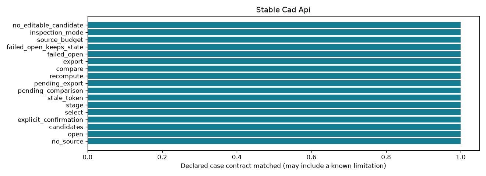

Offline, bounded research controls. A passing check may document a failure or an abstention.
| control_id | outcome | expected | checks_pass |
|---|---|---|---|
| no_source | no_source | no_source | True |
| open | ok | ok | True |
| candidates | ok | ok | True |
| explicit_confirmation | confirmation_required | confirmation_required | True |
| select | ok | ok | True |
| stage | staged | staged | True |
| stale_token | revision_conflict | revision_conflict | True |
| pending_comparison | pending_changes | pending_changes | True |
| pending_export | pending_changes | pending_changes | True |
| recompute | committed | committed | True |
| compare | ok | ok | True |
| export | ok | ok | True |
| failed_open | io_error | io_error | True |
| failed_open_keeps_state | retained | retained | True |
| source_budget | resource_limit | resource_limit | True |
| inspection_mode | ok | ok | True |
| no_editable_candidate | abstained | abstained | True |
Detailed evidence · CSV · Contract
